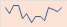

Team Friends Fantasy Football League
| Current season: 2025 TFFF season | |
 | |
| Sport | NFL football |
|---|---|
| Founded | 2011 |
| Formerly | Billieve '05 (2005) Tedy Bruschi sucks (2006) We have dicks (2008) Da Bills (2009) |
| First season | 2011 |
| Commissioner | Pat Odrobina |
| No. of teams | 12 |
| Most recent champions |
Tony Carbone (2nd title) |
| Most titles | Bobby Giambra (3 titles) |
| Official website | Yahoo Fantasy Football Site |
History
Early years (2005‑2009)
Little is known about the seasons prior to the establishment of the Team Friends League. Online fantasy football was still in its adolescence.
2005 marked the first recorded instances of what resembles a fantasy football league. Billieve '05 was a 6-team league with IDP, 0.5 PPR, 0.5 pts completions. For the record, the JP Losman-led Bills finished 3rd in the AFC East (5-11) in 2005.
Several current day Team Friends franchises can trace their heritage back to Billieve '05.
The pre-history league of 2006 saw the abandonment of the IDP format. The semblence of a league was named Tedy Bruschi Sucks. A sentiment that rings true to this day. The ever-rotating list of franchises included 2 present-day managers:
No known records exist of a fantasy football league in 2007. The true reasons lost to time, though some have speculated to the emergence of driver's licenses, paying jobs, and frivolous pursuits of girls.
Again a 10-team league formed in 2008, We have dicks. While managers of some franchises remain unknown (Dreamsicles, Lakers, The Big Ones), 3 current-day managers surfaced:
2009 saw a reduced 8-team league, Da Bills. Oral history passed down through generations reveal rudimentary drafting techniques including a massive white board in the backyard of the Ziemienaski household. A novel approach to scoring was implemented in Da Bills - Bonus points for yardage milestones (4pts @ 250yd passing, 4 pts @ 100yd rush, etc.)
The same 3 current-day managers carried over to 2009:
As in 2007, no known records of a league exist from 2010. A dark time in history would lead to the burgeoning of a new league in 2011, one with a lasting legacy...documented and persisted under the monicker Team Friends.
Modern era (2011‑present)
2025 marked the 15th sanctioned season of TFFF.
| Season | 🏆 1st Place | Best Reg. Season Record | Most Points |
|---|---|---|---|
| 2011 | Z | Z - 10-4-0 | Z - 1636 pts |
| 2012 | Dave | Sean - 10-4-0 | Sean - 1511 pts |
| 2013 | Sean | Z - 11-3-0 | Bobby - 2096.08 pts |
| 2014 | Bobby | Z - 11-2-0 | Bobby - 1728.66 pts |
| 2015 | Boyce | Dave & Boyce - 9-4-0 | Boyce - 1732.22 pts |
| 2016 | Bobby | Boyce - 12-1-0 | Boyce - 1670.76 pts |
| 2017 | Bobby | Bobby - 10-3-0 | Bobby - 1662.04 pts |
| 2018 | Dave | Lepo - 12-1-0 | Lepo - 1895.72 pts |
| 2019 | Katie | Dave & Pat - 10-4-0 | Pat - 1851.34 pts |
| 2020 | Boyce | Sean - 11-2-0 | Keelan - 1764.64 pts |
| 2021 | Keelan | Pat - 11-3-0 | Tony - 2011.64 pts |
| 2022 | Tony | Bobby & Sean - 10-4-0 | Tony - 1912.76 pts |
| 2023 | Josh | Andy - 11-3-0 | Josh - 1879.82 pts |
| 2024 | Pat | Pat - 11-3-0 | Pat - 1927.16 pts |
| 2025 | Tony | Andy - 11-3-0 | Tony - 1852.66 pts |
| 2026 |
Historical Championship Points
| Seasons | Owner | 🏆 | 🥈 | 🥉 | Champ Score | |
|---|---|---|---|---|---|---|
| 14 | Bobby | 3 | 3 | 1 | 1.14 | |
| 15 | Sean | 1 | 4 | 2 | 0.87 | |
| 15 | Dave | 2 | 2 | 0 | 0.67 | |
| 14 | Tony | 2 | 0 | 1 | 0.50 | |
| 15 | Z | 1 | 1 | 2 | 0.47 | |
| 13 | Boyce | 2 | 0 | 0 | 0.46 | |
| 9 | Andy | 0 | 2 | 0 | 0.44 | |
| 12 | Josh | 1 | 0 | 2 | 0.42 | |
| 15 | Pat | 1 | 0 | 3 | 0.40 | |
| 13 | Katie | 1 | 0 | 1 | 0.31 | |
| 12 | Lepo | 0 | 1 | 1 | 0.25 | |
| 3 | Mike | 0 | 0 | 0 | 0.00 | |
| 1 | Steve | 0 | 0 | 0 | 0.00 |
Record Book
| Most Points Single Week |
213.94 - The Human Suitcases - 2019 Week 5 vs. Maybe next year |
|---|---|
| Most Points Season |
2096.08 - The Timmies - 2013 |
| Kicking Points Single Week |
37 - Bologna Ponies - 2013 Week 15 vs. #Hashtags |
| Kicking Points Season |
338 - The Timmies - 2013 |
| DEF Points Single Week |
38 - Gettin Diggy wit it - 2013 Week 1 vs. Cåptain Crünch |
| DEF Points Season |
225 - Metamucil - 2019 |
| Most Hi Scores Season |
4 - Albóndigas - 2017 |
Regular Season Records
Explain the conference/division layout, ownership model, salary‑cap system, and any recent rule changes.
| Inagural Season | Seasons | Owner | Wins | Losses | Pct | Best Reg Season Finish | |
|---|---|---|---|---|---|---|---|
| 2011 | 15 | Z | 112 | 91 | 0.55 | 1 ('11,'13,'14) |  |
| 2011 | 15 | Sean | 113 | 90 | 0.56 | 1 ('12,'20,'22) |  |
| 2011 | 15 | Dave | 105 | 95 | 0.52 | 2 ('15,'19) | |
| 2011 | 15 | Pat | 103 | 100 | 0.51 | 1 ('19,'21,'24) |  |
| 2012 | 14 | Bobby | 100 | 89 | 0.53 | 1 ('17) |  |
| 2012 | 13 | Boyce | 74 | 101 | 0.42 | 1 ('15,'16) |  |
| 2012 | 14 | Tony | 89 | 106 | 0.44 | 2 ('25) |  |
| 2013 | 13 | Katie | 85 | 90 | 0.49 | 1 ('14) |  |
| 2014 | 12 | Lepo | 81 | 80 | 0.50 | 1 ('18) |  |
| 2014 | 12 | Josh | 76 | 85 | 0.47 | 2 ('16,'23) |  |
| 2017 | 9 | Andy | 69 | 53 | 0.57 | 1 ('23,'25) |  |
| 2023 | 3 | Mike | 23 | 19 | 0.55 | 4 ('23,'24) |  |
| 2025 | 1 | Steve | 4 | 10 | 0.29 | 12 |  |
Playoff Results
Outline the regular‑season schedule, playoff format, and offseason activities (draft, free agency, etc.).
| Season | 🏆 1st Place | 🥈 2nd Place | 🥉 3rd Place | |
|---|---|---|---|---|
| 2011 | Z | Sean | Jerry | |
| 2012 | Dave | Ryan | Sean | |
| 2013 | Sean | Bobby | Z | |
| 2014 | Bobby | Lepo | Katie | |
| 2015 | Boyce | Sean | Pat | |
| 2016 | Bobby | Dave | Josh | |
| 2017 | Bobby | Kujo | Josh | |
| 2018 | Dave | Sean | Lepo | |
| 2019 | Katie | Dave | Bobby | |
| 2020 | Boyce | Sean | Keelan | |
| 2021 | Keelan | Z | Tony | |
| 2022 | Tony | Bobby | Sean | |
| 2023 | Josh | Andy | Pat | |
| 2024 | Pat | Bobby | Z | |
| 2025 | Tony | Andy | Pat |
Playoff Notables
- Bobby has the most Championships at 3
- Mike has made the playoffs in each of his 3 years in the league
- 4 teams have made the playoffs in their inagural season
- Bobby ('12), Lepo ('14), Andy ('17), Mike ('23)
- In 2025, Tony becomes the 4th manager to win multiple championships
- Bobby (3), Dave (2), Boyce (2), Tony (2)
- Z holds the record for longest playoff drought ('15 - '20)
- Dave has won 6 or more games in 14 of his 15 seasons
- He won only 1 game in 2021
Dave's Weirdly Sexual Teamnames
References
- Your Mom, yourmom.com, April 20, 1969.